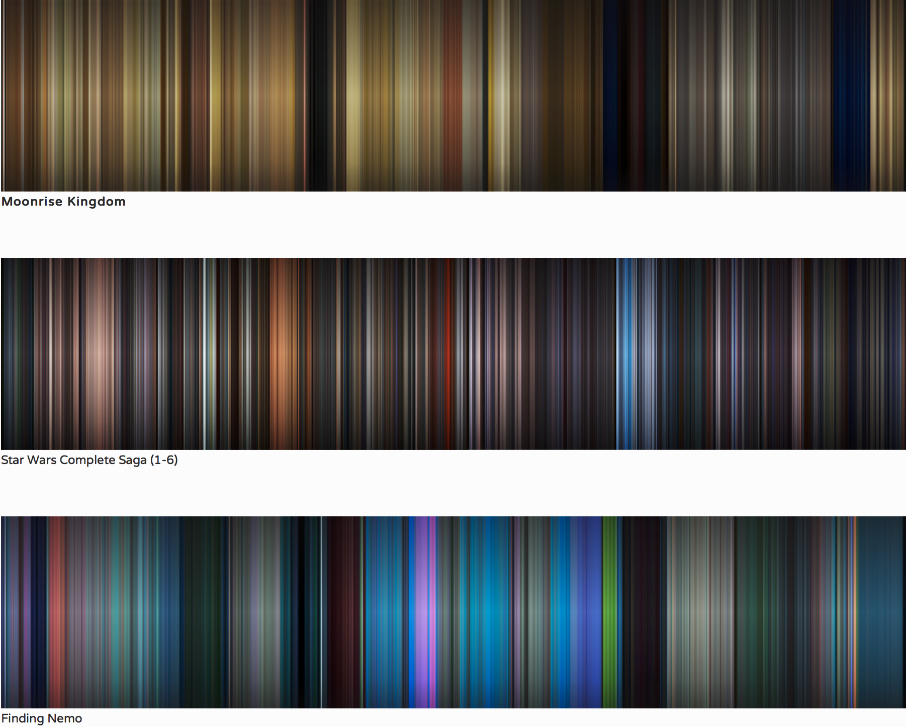
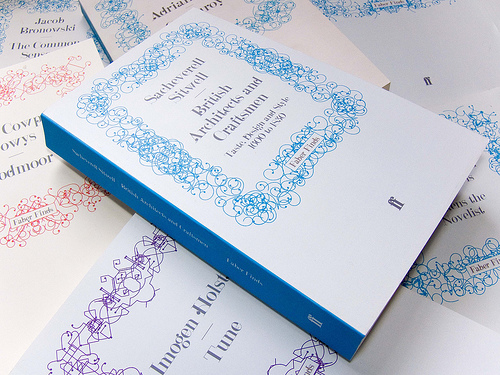
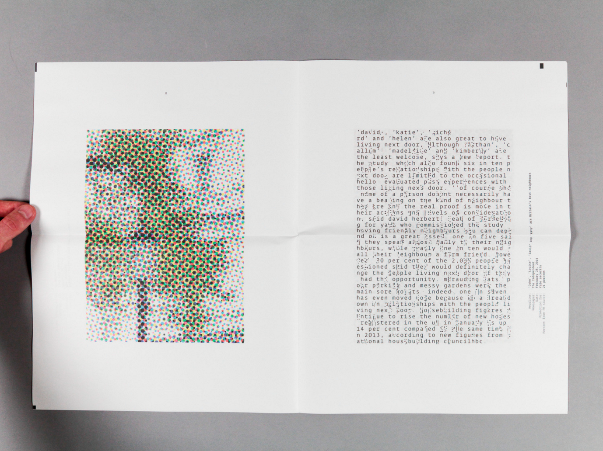

Embedded Processing programs will not display in Chrome, only Safari or Firefox.
mapping syllabic stresses
Text from sci-fi short story Books of Sorrow. A text input is analyzed for syllabic stress and then visualized as a line graph or series of shapes. Stressed/unstressed syllables are given different treatment that aim to abstract the text as written language but not as its spoken qualities (spikes in height or sharpness of shape for stressed syllables, etc.)
Aesthetically still very basic and linear, but working. Lots of potential for computing a syllable's stress, rarity, phoneme/family of phonemes and using that "creature" and its attributes as logic for the drawing.
A passage of text is checked over word by word for a specified quality (adjective or adverb, in this case) and whether or not the word passes the test is stored in a list of true/false (boolean) variables. This list can then be iterated over as useful data in many ways.
A simple grid is drawn in this test that is roughly the width of a paragraph (~12 words), with a filled circle standing for an adjective/adverb and an empty one for anything else. This polarizes the text into a binary state, privileging one type of word and generalizing the remainders. It can also be used to visually summarize huge lengths of text, and imply things about the text in the context of subjective "writing wisdom" (such as using better verbs and nouns instead of many adjectives and adverbs) or historical/genre trends.
(click inside window to draw) Basic drawing tool based on sampling the position of the mouse every 8 frames, and drawing a triangle when 3 points have been sampled. The triangle is made of the lastest three points, and is filled with the average colour of two of them in relationship to their position in a source photo.
Not much inspiration or progress came out of this experiment, but it was interesting watching friends use it. The capabilities of the program and the content of the photo influenced their drawing patterns, and friends who did any drawing or painting would have very different outcomes despite the outcome being semi-automated:
This program has a class called Draftsman with takes an input of a text string, and creates its own data banks such as a list of all individual words in the string, and lists of true/false values for whether or not each word is an adjective, noun, etc.
Creating a class means being able to pre-analyze and store lots of data about an input before calling on that class to render itself as pixels on-screen. The three "graphs" above are for excerpts from The Shining, Moby Dick, and Twilight respectively, with basic expressive logic such as spikes representing verbs, solid dots representing nouns, flowing curves representing adjectives, etc. I plan to expand the drawing logic (sin waves, fractals) to make more complex decisions and draw relationships between data within a text and parallel to it in other texts, rather than just essentially connecting dots.
Possible ways to arrange the prints — the previous diptych idea only works if the code is short enough to be written with a case of type, unless it changes typefaces part way through (tendency to run out of punctuation). Making separate prints allows type to be re-used and also resembles the way you'd separate codeblocks into tabs and files to keep it organized.
The second arrangement indicates the illustration is not the "final product" or in a hierarchal position by inserting it between code blocks, although technically the illustration is one full representation, and the multiple code blocks together are another so it may not fit conceptually.
research and interesting works

Film Colour Analysis is a project by Dillon Baker where each frame of a film has its average colour calculated and drawn as a 1 pixel line in sequence.
Interesting way to show the "colour story" of a film, which is carefully crafted by the filmmaker/colourist and enjoyed subconsciously by the viewer. The mood and scenery changes are quantified and can be viewed all at once instead of frame-by-frame.

Generative Design, a Processing manual and series of case studies about generative
One example was the generative book covers made for Faber & Faber, which re-publishes out-of-print books to make them more accessible. Software was created for their print-on-demand service which would generate a unique cover for every title in the series based on one of four genres, the content of the text, and the custom cover typeface.
The software is especially interesting because it generates hundreds of options for each title and self-selects suitable designs in terms of composition and uniqueness. The program is taught not only how to draw certain shapes based on text but how to assess its own work as a whole.

Artist and designer Jim Buell creates work that references contemporary technology, uses it, or both, such as his infinitely-scrolling book. A continuous ticker of news runs throughout, interrupting the content with "unverified", fictious news bites.
Pictured left is a page from his newspaper Distorted Reality, which scrambles the text in news articles to a degree determined by how much they copy and paste directly from PR surverys masquerading as news.